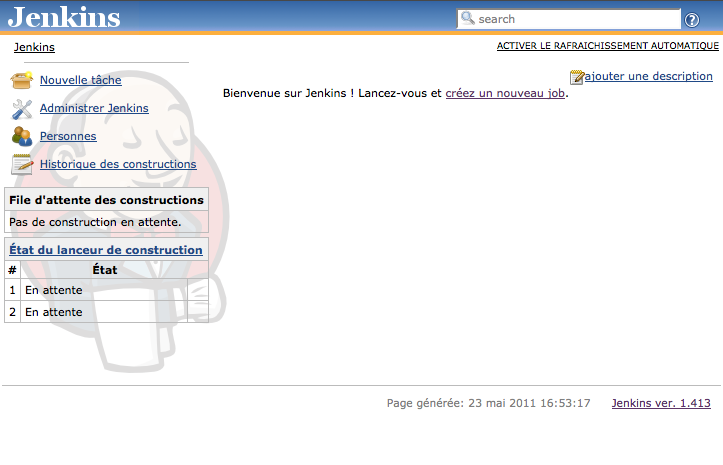
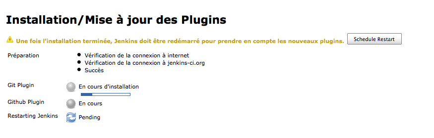
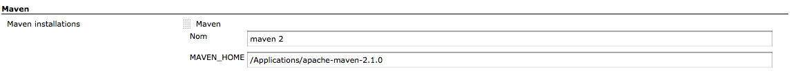
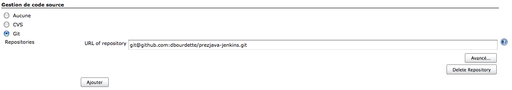
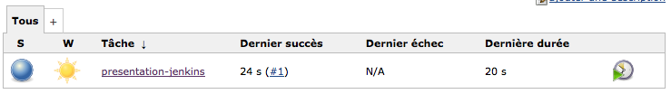
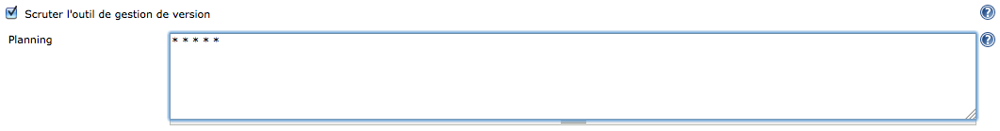

Jenkins est un serveur d'intégration continue open source créé par Kohsuke Kawaguchi.
Il est open source avec une communauté très dynamique.
Il dispose d'un très grand nombre de plugins et s'intègre nativement avec maven.
Quelques autres serveurs d'intégration continue existants :
- Hudson : Jenkins et Hudson sont issu de la même souche. Hudson est un produit Oracle.
- Continuum et Gump : 2 serveurs d'intégration continue de la fondation apache.
- Bamboo : Le serveur d'intégration d'Atlassian (jira, confluence...). Très complet mais payant.
Plus d'exemples sur la page de wikipedia (continuous integration).
Dans un premier temps, nous allons tester jenkins avec un projet de référence simple.
Ensuite, on ajoutera le projet todooz que nous sommes en train de développer.
Installation
Il faut télécharger le .war depuis le site de jenkins
Une fois téléchargé, il suffit de le lancer:
java -jar jenkins.war
Par défaut, jenkins se lance sur le port 8080.
Afin de le lancer sur un autre port il suffit d'utiliser l'option --httpPort
java -jar jenkins.war --httpPort=8081
Les options de jenkins sont disponibles dans la documentation et notamment dans la partie démarrage de jenkins
Ce qui donne la sortie suivante
Running from: /Applications/Jenkins/jenkins.war
webroot: $user.home/.jenkins
[Winstone 2011/05/23 16:45:46] - Beginning extraction from war file
hudson home directory: /Users/bourdette/.jenkins found at: $user.home/.jenkins
Using one-time self-signed certificate
[Winstone 2011/05/23 16:45:49] - HTTP Listener started: port=8081
[Winstone 2011/05/23 16:45:49] - Winstone Servlet Engine v0.9.10 running:...
23 mai 2011 16:45:49 hudson.model.Hudson$5 onAttained
INFO: Started initialization
23 mai 2011 16:45:49 hudson.model.Hudson$5 onAttained
INFO: Listed all plugins
23 mai 2011 16:45:49 hudson.model.Hudson$5 onAttained
INFO: Prepared all plugins
23 mai 2011 16:45:49 hudson.model.Hudson$5 onAttained
INFO: Started all plugins
23 mai 2011 16:45:49 hudson.model.Hudson$5 onAttained
INFO: Augmented all extensions
23 mai 2011 16:45:49 hudson.model.Hudson$5 onAttained
INFO: Loaded all jobs
23 mai 2011 16:45:50 hudson.model.Hudson$5 onAttained
INFO: Completed initialization
23 mai 2011 16:45:50 hudson.TcpSlaveAgentListener <init>
INFO: JNLP slave agent listener started on TCP port 54703
Jenkins tourne et sa configuration est dans $user.home/.jenkins
Ajout du plugin github
Afin de pouvoir récupérer notre projet sur github, nous allons installer le plugin nécessaire.
Les plugins sont accessibles via Administrer Jenkins > Gestion des plugins > Disponibles.
Installez le plugin github.

Configuration de maven
Afin que jenkins puisse exécuter le build, il a besoin de savoir où est installé maven.
La configuration est accessible via Administrer Jenkins > Configurer le système.

Il faut ajouter maven en configurant le MAVEN_HOME.
Ajout d'un job
Depuis la home de jenkins, on ajoute un job "presentation-jenkins" de type maven2.
La configuration du repository github est git@github.com:dbourdette/prezjava-jenkins.git.

Tous les autres paramètres sont à laisser inchangés.
Exécution du job
Depuis la home de jenkins, il est maintenant possible de lancer manuellement le job.

Une fois le job exécuté, il est possible de naviguer et d'obtenir des informations sur le build.
Détection d'une modification
Dans l'optique de l'intégration continue, nous souhaiterions qu'un build soit lancé après chaque commit
Il nous faut changer la configuration du job afin qu'il scrute le repository.

Jenkins est maintenant configuré pour regarder régulièrement si il y a eut un changement.
Jenkins dans la forge logicielle
Les capacités de Jenkins sont bien plus grandes que ce court exemple, mais la configuration reste simple et rapide.
Grâce aux plugins il est possible de faire communiquer Jenkins avec d'autres éléments de la forge logicielle.
Notre projet
Notre projet todooz est sous github dans un repository git@github.com:{user}/todooz.git.
Configurez un job qui build ce projet comme il le fait avec le projet de référence.
Faites une modification dans le répository github et vérifiez que jenkins relance bien le build.
Une fois ce projet intégré dans jenkins, on peut supprimer le job pour le projet "presentation-jenkins".